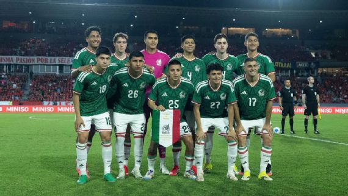
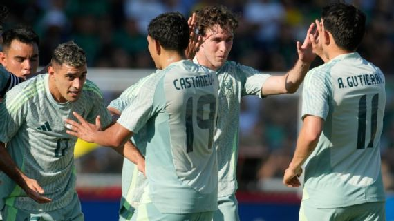

La Selección Mexicana cerró su primera gira de 2026 con un saldo engañoso en el marcador, pero sumamente revelador en el funcionamiento. Con victorias consecutivas de 1-0 ante Panamá y Bolivia, el conjunto dirigido por Javier Aguirre cumplió con el trámite de los resultados, aunque dejó a la afición con más dudas que certezas a pocos meses del Mundial.

Pobre exhibición y falta de gol
A pesar de romper la racha negativa que arrastraba desde finales de 2025, el desempeño en la cancha fue calificado por diversos sectores de la prensa como una "mediocridad absoluta". Ante Panamá, en el Rommel Fernández, el equipo mostró una alarmante falta de creatividad, logrando apenas el gol de la diferencia en un encuentro trabado. La historia se repitió frente a Bolivia, donde el Tri volvió a imponerse por la mínima sin convencer a sus seguidores.
Las Caras Nuevas
- Raúl Rangel: El arquero de Chivas recibió la confianza total del "Vasco", dejando en la banca a Malagón y Acevedo.
- Richard Ledezma: Debut oficial del mediocampista tras completar su cambio de federación desde EE. UU.
- Gilberto Mora: El joven de Xolos continúa sumando minutos como una luz de esperanza en el medio campo.
Liderazgo sin pegada
Raúl Jiménez y Edson Álvarez se mantuvieron como los líderes del vestuario, pero la falta de balones con ventaja para los delanteros sigue siendo el talón de Aquiles del esquema de Aguirre. El equipo se ve sólido en defensa, pero inoperante al momento de generar peligro real en el área rival.

Lo que viene: El verdadero examen
El optimismo es escaso. La crítica se centra en que México parece fuerte solo dentro de la zona de CONCACAF, pero sufre enormemente ante cualquier rival que le exija un orden colectivo superior. Con compromisos pactados para marzo frente a potencias como Portugal y Bélgica, el Tri deberá elevar drásticamente su nivel si no quiere llegar a su propia Copa del Mundo con el cartel de víctima.